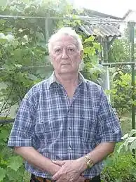

Грязнов Олександр Андрійович народився 8 червня 1940 року в місті Пирятині Полтавської області над прозорим і тихим Удаєм, де прожив свої перші двадцять років. Ріс і виховувався в сім'ї діда по материнській лінії Євмена Мироновича Горіздри, нащадка козацького роду. Російське ж прізвище успадкував від батька, Андрія Інокентійовича Грязнова, геолога і альпініста, який воював на Кавказі і був одним із тих сміливців, хто в лютому 1943 року за наказом командування зняли з найвищої точки Європи – двоголового Ельбруса – фашистські знамена і встановили червоні. Саме тоді Андрієм Грязновим були написані слова "Баксанської пісні", яку і досі співають альпіністи і туристи. Батько загинув у 1949 році в горах Середньої Азії, де він працював у геологічній експедиції.
Студентські роки Олександра Грязнова пройшли у прекрасному, висококультурному місті Львові, де з 1960 по 1965 рік він навчався у Політехнічному інституті. Писати вірші він почав іще в школі, але тільки в інституті вийшов з ними на люди. Писав епіграми і жартівливі присвяти друзям, віршовані підписи до фотографій і карикатур у студентських "бойових листках", вірші для факультетської стінної газети і для команди КВК. А для душі писав ліричні вірші.
Але здобутий фах інженера-геодезиста, незважаючи на його романтику, був надто далеким від поезії. До того ж одруження, народження синів, необхідність заробляти не часто дозволяли писати. Робота з нескінченними роз'їздами не залишала часу для поезії. Дев'ять років працював О. Грязнов на польових геодезичних роботах. Лише після переходу на викладацьку роботу в технікум транспортного будівництва з'явилася можливість коли-не-коли братися за олівець. Іще одна суттєва обставина позначилася на творчості Олександра Грязнова: практично тридцять років він писав вірші російською мовою. Помітних успіхів це йому не принесло, але дало можливість досконало оволодіти поетичним ремеслом. Лише після проголощення незалежності України Олександр Грязнов почав писати рідною мовою і нарешті зрозумів, що тільки нею він може висловити усе, що накипіло на серці. Трохи згодом він спробував робити переклади класичної російської поезії, намагаючись безпосереднім порівнянням з кращими її зразками довести перш за все собі безмежні можливості української мови. Друкуватися О. Грязнов почав напередодні свого шестидесятиріччя. У №5-6 журналу "Всесвіт" за 1999 рік був надрукований його переклад пушкінського "Скупого лицаря", а у №1-2 журналу "Дніпро" за 2000 рік – підбірка з дванадцяти віршів під загальною назвою "Душі моєї фотознімки". Такий пізній дебют, як не дивно, поклав початок плідній поетичній і перекладацькій праці. Досить об'ємні підбірки віршів Олександра Грязнова друкувалися ще на сторінках журналів "Дзвін", "Вітчизна", "Райдуга", "Коледжанин" та у газетах різного рівня. 2005 року вийшла друком перша книга його віршів "Якщо вже так судилося мені…", а 2009 року – книга "На мілині життя у морі часу" загальним обсягом біля шестисот віршів. Перекладацький доробок Олександра Грязнова ще об'ємніший. Він переклав українською мовою один роман, двадцять два драматичних твори, десять поем і біля трьохсот віршів російських і англійських поетів. З 1995 року Олександр Андрійович почав активну перекладацьку діяльність. Вже в зрілому віці він створив цілий ряд україномовних перекладів поетичних творів російських та англійських авторів. У 1999 році в журналі "Всесвіт" був опублікований переклад однієї з маленьких трагедій О.Пушкіна "Скупий лицар", а в "Хрестоматії зарубіжної літератури" для 9 класу — переклади п'яти віршів М. Лермонтова. У 2006 році була видана книга "Українське звучання чужої поезії", яка містила переклади дев'яти поем і ста одинадцяти віршів російських та англійських поетів. У 2007 році вийшла друком книга "Драматичні твори Д.Байрона та О. Пушкіна", до якої ввійшли байронівські поеми "Каїн" та "Манфред", а також пушкінські "Маленькі трагедії", "Борис Годунов" та "Русалка". Олександр Грязнов перекладав також твори геніального англійського драматурга В. Шекспіра. У 2001 році ним було перекладено трагедію "Гамлет". Наприкінці 2008 року було видано двотомник "Трагедії та хроніки" В. Шекспіра, до якого ввійшли трагедії "Гамлет", "Отелло", "Макбет" і "Король Лір" та хроніка "Король Генріх четвертий" у двох частинах. За останні роки О. А. Грязнов переклав ще вісім творів Шекспіра: "Юлій Цезар", "Антоній і Клеопатра", "Річард ІІ", "Річард ІІІ", "Король Джон", "Дванадцята ніч", "Багато галасу з нічого" та "Венеціанський купець". На жаль, не всі переклади опубліковано, оскільки видати їх самотужки автор не в змозі. У журналі "Всесвіт" № 7-8 за 2011 рік надруковано містерію "Каїн" Джорджа Гордона Байрона в перекладі О.Грязнова. У 2009 році Олександр Грязнов став членом Національної спілки письменників України. Олександр Грязнов закінчив трудову діяльність, відпрацювавши 35 років викладачем геодезії і маркшейдерської справи у Київському технікумі транспортного будівництва і підготувавши сотні спеціалістів, що внесли значний вклад у будівництво київського метрополітену і багатьох інших об'єктів. А діяльність його, як поета і перекладача, продовжується і нині.